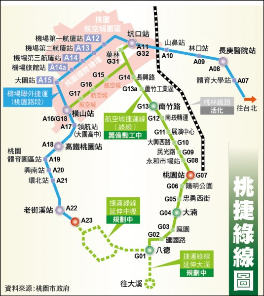

A7重劃區 區域公車
微循環公車 202

班車時刻表, 請點選：(時刻是概估時間需稍作提前以免誤班)
林口長庚-›樂善國小
06:24, 07:44, 09:04, 10:24, 11:44, 13:24, 14:44, 16:04, 17:24, 18:44, 20:44
樂善國小-›林口長庚
06:16, 07:36, 08:56, 10:16, 11:36, 13:16, 14:36, 15:56, 17:16, 18:36, 20:16
社區巴士共享
待推動！桃園捷運
- 桃園捷運官網, Wikipedia，桃園捷運綠線，桃園捷運棕線
- A8 長庚醫院站 - A1 台北車站
- 乘車時間：普通車 約30分鐘，直達車 約 22 分鐘
- 票價： 全票 70 元，優待票 35 元，兒童票 56元
- 定期票價：1 日票 320元，30 天 2,058元，60天 3,780元，90 天5,292 元，120天 5,880 元
- A8 長庚醫院站 - A13 第二航廈站
- 乘車時間：普通車 約21分鐘，直達車 約 18 分鐘
- 票價： 全票 50 元，優待票 25 元，兒童票 40元
- 定期票價：1 日票 320元，30 天 1,470元，60天 2,700元，90 天3,780 元，120天 4,200 元
A8 長庚醫院站

捷運先導公車
- 維基百科：捷運先導公車
- 桃園公車：動態資訊系統
- 綠線先導公車GR - 桃園後站 ↔ 捷運坑口站
- 1.桃園後站 - 2.聖保祿醫院 - 3.建國路口 - 4.統領百貨 - 5.桃園郵局 - 6.永和市場 - 7.中正三民路口 - 8.中正商業大樓 - 9.北埔路口 - 10.中正信光街口 - 11.中正慈文路口 - 12.慈文國中 - 13.中正大興西路口 - 14.福安宮 - 15.中正藝文特區 - 16.行政執行處 - 17.同德十一街口 - 18.莊敬路口 - 19.中正莊二街口 - 20.中正橋 - 21.南竹路口 - 22.南順一街口 - 23.奉化忠孝西路口 - 24.麗寶經典 - 25.光明郵局 - 26.光明國小 - 27.光明國中 - 28.錦興國小 - 29.南崁 - 30.台茂購物中心 - 31.下南崁 - 32.南亞/好市多 - 33.溪州 - 34.台灣松下- 35.徐厝 - 36.三商 - 37.水尾 - 38.八股路口 - 39.下水尾 - 40.果林 - 41.崁下 - 42.捷運坑口站
- 綠線先導公車GR2 - 桃園後站 ↔ 八德
- 桃園後站(G07) - 統領百貨公司 - 南華街口 - 三民建國路口 - 三民介壽路口 - 陽明公園站(G06) - 桃園監理站 - 利台 - 力行街口 - 無線電台 - 小大湳 - 忠勇西街站(G05) - 介壽大智路口 - 陸光四村 - 大湳站(G04) - 大湳辦事處 - 瑞祥社區 - 鴻昌社區 - 麻園站(G03) - 梅花社區 - 欣桃社區 - 松柏園 - 瑞豐國小 - 瑞發家園 - 更寮腳 - 聯福巷口 - 興豐路口 - 八德國中 - 八德站(G01)
- 橘線先導公車BR
- 收費方式
- GR：兩段票收費, 緩衝區：南竹路口—南崁
- GR2：一段票收費
- 每段票費用：
- 全票：新台幣18元
- 半票：新台幣9元
- 班距
- 首班車:6:00
- 末班車:22:30
- 尖峰每20分鐘一班，離峰每30分鐘一班。


出租汽車 / UBike
Taxi 出租汽車
- 新北市
- 桃園市
-
龜山區
- 大文山：手機直撥 55106, 0800-501-666, 03-350-1666
- 台灣大：手機/市話 直撥 55688
- 新梅：03-363-0033, 03-375-3322
租車
UBike 公共自行車
- 桃園公共自行車網：UBike
- 公共自行車24小時客服專線：03-286-8833
- 費率-單次租車：
- 使用4小時內每30分鐘10元
- 4小時～8小時內每30分鐘20元
- 超過8小時以上每30分鐘40元
- 費率-會員
- 使用前30分鐘免費
- 4小時內每30分鐘10元
- 4小時～8小時內每30分鐘20元
- 超過8小時以上每30分鐘40元
- 付費方式
- 單次使用：信用卡
- 會員：悠遊卡，一卡通
- 註冊方式
- 單次使用：各站點KIOSK申辦
- 會員：服務中心申辦;官方網站申辦，官方APP申辦 (Google Play, Apple Store)，各站點KIOSK申辦
- App 下載：Google Play, Apple Store
- 使用說明：租還方式，安全騎乘
- 站點地圖：站點即時資訊
- YouBike 保險：YouTube, 北北桃YouBike傷害險
- Youtube: 騎動桃園，租借破千萬，使用教學
未來道路規劃


計畫緣起
國道1號林口交流道位於新北市林口區與桃園市龜山區交界，設有林口A(約41K)及林口B(約43K)二個鑽石型交流道，並以集散道串聯。因周邊大型開發持續增加，人口快速成長，交通量大幅增加，囿於匝道出入口受主線長爬坡、匝道縱坡、地方道路號誌延滯及文化一路跨越橋儲車空間不足等影響，導致車輛回堵主線壅塞嚴重，爰辦理本工程。計畫內容
- 新增林口A交流道南出匝道：原林口A南出匝道於外側公有地新增南出左轉高架匝道，跨越文化一路及國1主線後於桃園側各1車道銜接復興街及文化一路內側，並於原南出匝道外側新增1右轉車道。
- 新增林口A交流道北入匝道：匝道起點為八德路與文化一路三角地帶，終點與林口B北入車道匯集後匯入主線。
- 林口A、B交流道南出南入及北出北入交織改善：以箱涵立體化改善，避免車輛交織，並考量北出車流大，增設林口A北出匝道銜接文化三路。
計畫期程
5年, 2021/7/30日核定，預計2025年完工通車規劃示意圖：

A7 區域道路計畫相關資訊
- 自由時報 2021/06/04 打通A7合宜宅交通任督二脈 桃園市府估經費10億獲補助
- A7重劃區重大建設整理 2020/11/29更新
- 牛角坡路 延伸 Facebook 影片

圖片來源：自由時報 2021/06/04
道路規劃
自由時報 2021/06/04 報導A7合宜住宅區對外聯外道路文青路塞車情形嚴重，市府規劃下面3案希望能改善當地交通。總計工程及用地經費10.6億元，已獲中央同意補助，目前正在進行用地取得作業，最晚2023年就可動工發包。。
變一案: 文學路延伸與樂善一路延伸 T字道路計畫
內政部已於2021/05/26 核定補助經費。 主要是打通文學路連接文化一路，紓解文青路車流，全長389米、將拓寬為20米道路；因用地範圍內含牛角坡煙囪、八卦窯等文化資產設施，目前正依文化資產保存法規定辦理審議程序，於文化資產認定前，同步辦理細部設計作業，預計於2023年發包。變二案: 牛角坡路延伸至文化一路
內政部已於2021/05/26 核定補助經費。全長163米，將拓寬為20米道路，預計2021年8月完成規劃設計，同步辦理用地取得，預計2022年底至2023年初可進行發包。變三案: 文藝街 延伸計畫
內政部已核定工程經費2498萬元。全長70米，將開闢為6到15米寬的道路，市府於2021/04/23 召開協議價購會議，正辦理簽約過戶程序，預計2021下半年將先完成用地取得即可發包。將會是進度最快的變更計畫。
樟腦寮磚窯廠遺址：目前只剩兩只煙囪，將會保留一只 （圖片來源： Facebook）